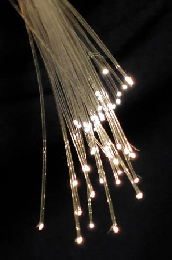

Fiber Optics: Communication at the Speed of Light
November 2012 · Columbia University Graduate School of Journalism

In February 2010, Internet search giant Google announced an exciting new product called Google Fiber. No, this wasn’t the edible energy bar that the tech company once teased it would be launching (a hoax it self-circulated on April Fools’ Day 2012). Google Fiber was a trial program that would equip a chosen group of U.S. communities with fiber-optic Internet access at the unprecedented rate of 1 gigabit per second—100 times faster than the average broadband connection most Americans use today.
People have studied fiber optics for years, and have known how to build and deploy these ultra-high speed networks for a while now. However, common wisdom dictated that the cost to Internet Service Providers to build out such networks outweighed the network’s benefits to a consumer. Only one commercial provider, Verizon, has offered what can be considered a “true” fiber-optic plan to the general public. Called FiOS, this faster-than-broadband network has been live in select U.S. cities since 2010. But to cut down on expenses, the company offered dampened speeds: only up to 300 megabits per second (Mbps), 30 times faster than broadband, but not close to the truest speeds of fiber optic technology. Google, a company that could afford to absorb some costs, was curious to see what a community would accomplish if it were supplied with the best speeds that fiber optic technology could make possible: gigabit (1000 Mbps) Internet access.
The difference between gigabit and megabit Internet connectivity is slight, and probably unnoticeable to the average user—a matter of a few minutes separating the transfer of large amounts of data, depending on file size. But to the Internet junkie, enterprising app developer or avid online gamer, seconds can spell the difference between a smooth and an unwieldy experience. With gigabit fiber-optic connectivity, astonishing scenarios can make the leap from hypothetical to real: Downloading a 1 gigabyte, full-length film from the Internet would take only eight seconds. Content-heavy business presentations could be instantly beamed to collaborators overseas. Real-time streaming graphics from video games could be delivered to gamers’ terminals without any loss in quality.
Google asked local governments interested in having their cities be the testbed for its ultra-high speed network to submit applications online. In response, nearly 1,100 communities sent in hopeful petitions. The city of Topeka, Kansas, was so enthusiastic that its mayor declared the town would temporarily name itself Google, Kansas, in a gambit to lure in the company. Then the mayor of Duluth, Minnesota, decreed that the name of every first-born male in his city would be named “Google Fiber.”
In spite of the two towns’ best efforts, neither was chosen. Last July—more than two years after the original announcement—Google Fiber finally went live in Kansas City, Missouri, 60 miles from Topeka. City officials had sealed the deal in 2011 by offering Google free access to city-controlled resources: They expedited processing of permits, offered space in city facilities and provided Google assistance with marketing and publicity efforts.
The municipalities’ scramble is indicative of the appeal of fiber-optic technology, which allows humans to be connected in ways that were once inconceivable.
Fiber optics (also called optical fibers) are thin, flexible filaments made of very pure glass (silica) or plastic, and measure about the same thickness in diameter as a strand of human hair. These strands are arranged in bundles—called optical cables—that transmit data carried by light signals from end to end of the fiber.
A single optical fiber has three distinct parts: a core, or the tough central part of the fiber where the light travels; cladding, or the reflective optical material encircling the core that bounces light back into the core should it veer off the path; and buffer coating, which protects the optical fiber from damage from moisture and physical damage.
Many people have come up with metaphors to explain how the system works, and one of the most well-known is this: Suppose you were standing at the mouth of a dark tunnel with a flashlight, and your friend was standing at the other end of the tunnel. To let your friend know where you are, you could shine the beam of your flashlight straight down the tunnel—naturally, if there were no twists or turns, your light signal would travel down a straight path and reach him without any problems.
If the walls of the tunnel curved, you might get the idea to position some mirrors inside the tunnel, angling them strategically so that your flashlight beam bounced off the walls all along the length of the tunnel, until it reached your friend. This is precisely the same mechanism at play in a fiber-optic cable, a principle formally called “total internal reflection.” The cladding is represented by mirrors in this analogy, which are designed not to absorb any light, only to reflect it.
On the other hand, if mirrors are dirty, some quality of the light might be lost, or degraded. Similarly, in a fiber-optic cable, the impurity of the cladding’s reflective material might cause light to be lost or attenuated. Which, in turn, can mean lost information.
While in one of two states of “light on” or “light off,” each fiber can represent either a 1 or a 0 in computer binary code. Since there can be thousands of fibers in a single cable, the potential for transmitting huge amounts of data from one place to another is immense.
Though novel applications of fiber-optic technology have emerged in present day computing, harnessing light and guiding it through media is a centuries-old idea. In the early 1840s, Daniel Colladon and Jacques Babinet guided light through bent glass rods, demonstrating refraction—one of the fundamental concepts of fiber optics. In 1854, John Tyndall demonstrated how to guide light in a water jet at the Royal Society in London, and at about the same time wrote about the property of total internal reflection.
Once the principles were well-known, developments in fiber optics manifested as applications of the technology.
In 1880, Alexander Graham Bell patented the Photophone, envisioned as a way to transmit voice signals over an optical beam—an idea before its time. However, it failed since air couldn’t relay light as dependably as wires could carry electricity. The invention was eventually donated to the Smithsonian Institution and left on a shelf, forgotten.
In the 1920s, researchers working on guiding light in glass fibers focused mostly on medical and dental applications—dentists, for instance, used bent quartz rods as mouth illuminators. In the 1940s, doctors used illuminated plexiglass as tongue depressors.
In 1966, Charles Kao and George Hockham showed that fibers could transmit laser signals efficiently if the glass was manufactured in a purer form. In 2009, Kao was awarded the Nobel Prize in Physics for pointing to the right material—fused silica, which we employ in fiber optics today. A research team from the U.S. company Corning Glass Works succeeded in crafting the glass fibers of fused silica with the low light losses that Kao imagined.
Today, fiber optics account for more than 80 percent of the world’s long-distance communication, with over 25 million kilometers of cable installed worldwide. Human applications of fiber optic technology are as wide-ranging as they are incredible—from television cameras engineered by NASA and sent to the moon, to an advanced fiber optics network at the Large Hadron Collider at CERN in Geneva that transfers vast amounts of data obtained by particle detectors to computer centers the world over.
Back in Kansas City, Google Fiber has made quite a splash in Hanover Heights, the first neighborhood (or “fiberhood,” as Google has dubbed it) where it has been activated. Here, a brand new Startup Village has emerged. Programmers can live for three months for free in the village in a house called “Home for Hackers,” where they can develop new programs while leveraging Google Fiber speeds. (Two hackers—one from Boston and one from San Francisco—have already moved to Kansas with the intention of living here.) A well-known organization, Compute Midwest, is holding the first ever hackathon powered by Google Fiber in Kansas City. And this is just the beginning. 180 more fiberhoods in Kansas City are slated to be lit with Google Fiber connectivity in the coming months.
“Google Fiber allows me to innovate on a new level because I can think in terms that I just couldn’t before,” says Evan Kirsch, founder of the online portfolio service Folioboy, and current Kansas City resident. “And even if it’s just in the dreaming stages—when I act as a visionary for my company and I start thinking what can I do for my company three or four years from now—I can think about things now that I couldn’t think about say, a year ago. And that’s because Google Fiber is here.”